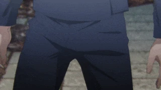
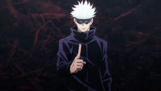
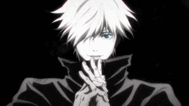

Рождение живого божества и парадокс личности
Когда 7 декабря 1989 года на свет появился Сатору Годжо, баланс сил во вселенной магов бесповоротно изменился. Впервые за более чем четыре столетия в клане Годжо родился ребенок, унаследовавший одновременно врожденную технику «Безграничность» и легендарную анатомическую аномалию — «Шесть глаз». Уже в детстве за его голову назначали астрономические награды, а проклятия прятались по теням лишь от ощущения его присутствия. Однако за величием абсолютной силы сформировался один из самых противоречивых характеров в истории магического мира.
В повседневной жизни Годжо кажется несерьезным, ветреным и даже инфантильным. Он обожает сладкое (хотя изначально начал есть десерты лишь для того, чтобы подпитывать сахаром непрерывно работающий мозг), подшучивает над коллегами и ведет себя с учениками Токийского магического колледжа как задорный старший брат. Однако под этой легкомысленной маской скрывается холодный, прагматичный и пугающе высокомерный маг, презирающий консервативную верхушку шаманов. Он открыто называет старейшин «гнилыми стариками» и не уничтожает их одним щелчком лишь потому, что кровавая бойня не решит проблему: на смену тиранам придут такие же слепцы. Поэтому его истинная жизненная цель — воспитать сильное, мыслящее и открытое новое поколение магов, способных встать с ним плечом к плечу.
 Анатомия непобедимости: От Бесконечности до Фиолетового
Анатомия непобедимости: От Бесконечности до Фиолетового
Атакующий же арсенал Годжо подразделяется на три ключевые формы:
Боевая система Сатору строится на манипуляциях пространством на субатомном уровне. Невидимым фундаментом его абсолютной защиты является «Бесконечность» — нейтральная форма техники клана. Это не физический щит, а воплощение математического парадокса Зенона об Ахиллесе и черепахе: вокруг Годжо пространство бесконечно делится. Любой удар, пуля или вражеское дзюцу, приближаясь к Сатору, начинает замедляться в геометрической прогрессии и в итоге замирает, так и не коснувшись его тела. Благодаря «Шести глазам» и постоянной работе обратной проклятой техники этот барьер функционирует в пассивном автоматическом режиме двадцать четыре часа в сутки, фильтруя объекты по массе, скорости и уровню магической угрозы.

Усиление: «Синий» (Ао). Создавая точку концептуального отрицательного расстояния, Сатору заставляет пространство схлопываться внутрь себя. Возникает эффект мощнейшего магнитного или гравитационного притяжения, всасывающий материю, здания и противников в заданный эпицентр.

Обращение: «Красный» (Ака). Направляя в технику «Безграничности» обратную (положительную) проклятую энергию, маг меняет вектор сил на прямо противоположный. Вместо притяжения рождается колоссальная взрывная волна отталкивания, способная сметать целые кварталы и пробивать тяжелейшую броню проклятий.

Таинство: «Фиолетовый» (Мурасаки). Вершина мастерства клана Годжо, рождающаяся при идеальном слиянии сходящегося «Синего» и расходящегося «Красного». В результате пересечения противоположных концепций возникает поток виртуальной массы, который буквально стирает любое физическое препятствие на молекулярном уровне, оставляя за собой лишь идеальный вакуумный след разрушения.
Владыка абсолютного вакуума: Необъятная бездна
Если базовых техник оказывается недостаточно, Годжо прибегает к высшей ступени колдовства — Расширению территории. Сложив пальцы в особую буддийскую печать (мудру Тайсякутэн), он призывает «Необъятную бездну».

Внутри этого домена противник оказывается посреди пугающего бескрайнего космоса. Эффект территории парадоксален: жертве даруется «всё», но именно это её и уничтожает. Мозг врага мгновенно и насильственно затапливается бесконечным потоком необработанной информации обо всем сущем во Вселенной. Жертва видит всё, чувствует всё и одновременно не может осознать ничего. Наступает паралич мышления и моторики: оказавшийся в «Бездне» враг превращается в живую статую, медленно умирающую от перегрузки нервной системы, пока Годжо методично решает его судьбу. Даже доли секунды, проведенной в этом пространстве обычным человеком, достаточно, чтобы нанести необратимый урон психике на месяцы вперед.
Те, кто бросил вызов богу: Главные противостояния
За долгие годы Годжо прошел через десятки сражений, однако именно несколько врагов оставили неизгладимый след в его биографии:
- Тодзи Фушигуро (Убийца магов). Единственный человек, сумевший довести молодого Годжо до состояния клинической смерти. Будучи полностью лишен проклятой энергии благодаря Небесному проклятию, Тодзи просчитал Сатору, истощил его и вонзил клинок «Перевернутого копья небес» прямо в шею мага. Но эта трагедия стала триумфом: на пороге гибели Сатору постиг суть обратной проклятой энергии, восстановил тело и вернулся в состоянии абсолютного экстаза, впервые применив смертоносный «Фиолетовый».
- Проклятия особого уровня (Дзёго и Ханами). Могущественные стихийные духи пытались объединиться, чтобы нейтрализовать Сатору. Их столкновения наглядно показали пропасть между сильнейшим магом и остальным миром: Годжо буквально глумился над атаками пылающего Дзёго, использовал его как наглядное пособие на уроке для Юдзи Итадори, а позже в метро Сибуи голыми руками раздавил Ханами, не прибегая даже к масштабным заклинаниям.
- Кэндзяку. Древний шаман-паразит, занявший тело единственного и лучшего друга Сатору — Сугуру Гето. Понимая, что победить Годжо в честном бою невозможно, Кэндзяку устроил масштабную бойню в Сибуе, воспользовался секундным шоком Сатору при виде мертвого друга и запечатал сильнейшего в артефакте «Тюремное царство».
- Рёмен Сукуна. Финальная кульминация всей жизни мага. Освободившись из заточения, Годжо сошелся в грандиозной дуэли в разрушенном Синдзюку с Королем Проклятий. Эта битва стала вершиной магического искусства в истории человечества: многократные столкновения расширений территорий, использование «Фиолетового» на максимуме и виртуозное превозмогание законов физики. В этом поединке Годжо отдал всего себя без остатка, наконец встретив того, кто разделил с ним бремя абсолютной силы.
«Быть сильнейшим» для Сатору Годжо никогда не было просто титулом — это было его проклятием. Долгие годы он нес груз ответственности за весь магический мир, оставаясь недосягаемым для союзников и непостижимым для врагов. Однако истинная победа Годжо заключалась не в побежденных им проклятиях, а в его учениках — Юдзи, Мегуми, Юте, Маки — тех, кого он защитил от косной системы и научил быть сильными, доказав, что даже бог из плоти и крови может оставить после себя не пепелище, а надежду на лучшее будущее.